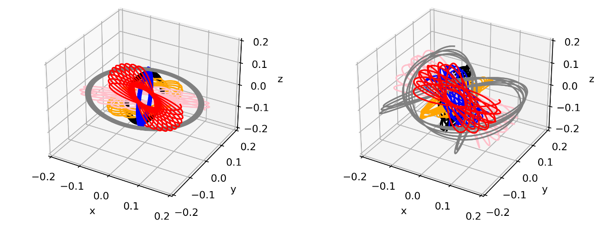

simulating gravitational orbits with fortran
Overview
The orbital simulation project began as the final assignment for the Computational Astrophysics module offered at the University of St Andrews. The aim was to utilise the [fortran] programming language to perform simple Newtonian dynamics calculations regarding the gravitational attraction of two or more bodies. The results of these calculations would then be written to a file so that the orbital paths could be visualised in Python using the Matplotlib library. The results were highly satisfactory, both for their visualisation and their physical accuracy.The following images show the results of a six-body simulation in both a spherical (left) and asymmetrical (right) mean galactic potential.
